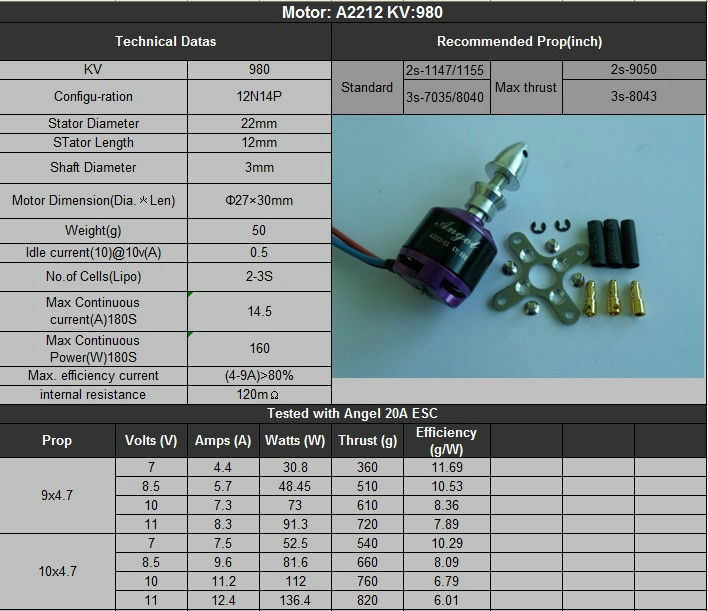
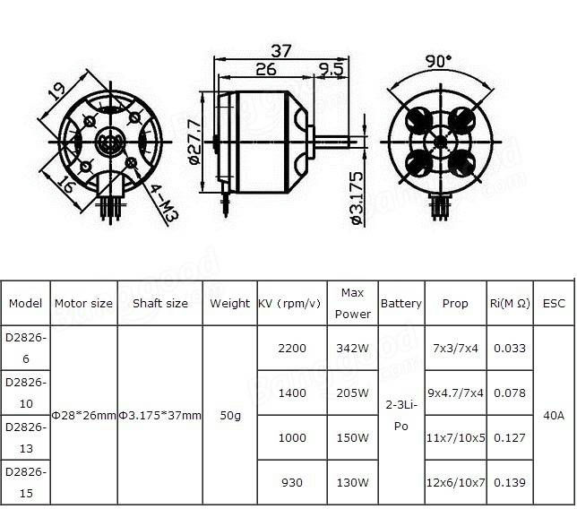

Recommended Hardware
Most of our RC scale models use BLDC motors (especially A2212 motor). Here's some extra info about the motors
Motors
1. A2212 Motor
The models numbers can be confusing since 2212 and 2826 are basically the same motor.
- 2212 - This is stator size of the motor (22mm diameter x 12mm height)
- 2826 - This is casing size of the motor (28mm diameter x 26mm height)
{: height=150px} 
ESC
A suitable ESC would be required for the BLDC motors 20A ESC would be suited for a A2212 motor. Blheli_S is the preferred choice for our models. Please see the Blheli_S section for further details.
Servo motor
For the servo, you can use any 9g servo. Even the common Blue servos will work fine. I recommended MG90S servo, they have better build quality and work smoothly.